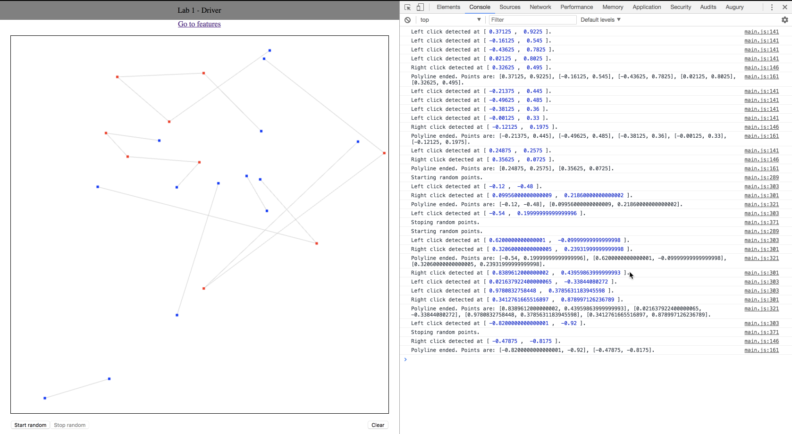

Lab 1 - Features
Student Info
- Name: Kevin Romero Peces-Barba
- CruzID: kromero8
- Student ID: 1635745
Clicks and drawing
- The program has an event that detects mouse clicks on the canvas.
- It can check which mouse button was clicked. It only accepts right and left clicks.
- When a valid click is detected the program logs it to the console. It indicates which button was clicked and the canvas coordinates where it clicked.
- Mouse clicks will draw a point. Theese points will be part of a polyline.
- Click detection only works if the random mode is not active.
Left Click
- Left click indicates a non-ending point.
- It can be the first point of a polyline (blue color) or an intermediate one (red color)
Right Click
- Right click is used to indicate an ending point. This will be the last point of the current polyline (blue color).
- The exception for this is that if a right click is detected with no active polyline it will work as the first point of it (blue color) and won't be non-ending.
- When a polyline is completed, the full list of points that comform it will be log to the console.
Line drawing
- The program will draw the lines between every polyline points (grey color).
Mouse movement
- The program will detect the mouse movement around the canvas.
- If there is no active polyline nothing will happen. If there is any active polyline then a rubberband line (green color) will be drawn from the last point of the polyline to the current mouse position.
- While random mode is active mouse detection won't happen. Instead it'll be simulated by the program.
Random Mode
- The program has a functionality to execute a random mode where random points will be selected and random clicks performed.
- The position of the new points is calculated using [(Math.random() * 2) -1]. This generates a random value between -1 and 1.
- To calculate if a new click is right or left Math.random() is also used to generate a number between 0 and 1. Then if the number is less than 0.7 it's a left click. Otherwise it's a right click.
- When this mode is working it will simulate the movement of the mouse from the previous point to the new one.
Screenshot
- Here is a sample of the program being used to draw some polyline:
